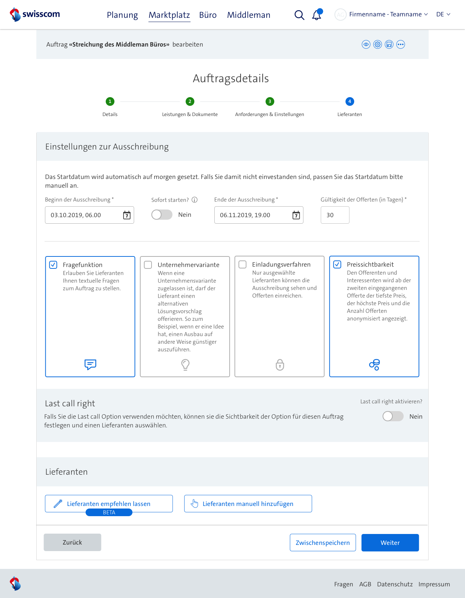
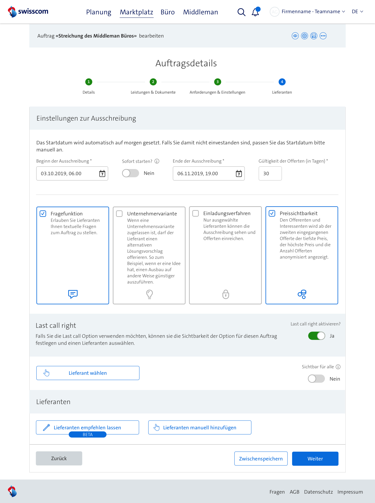
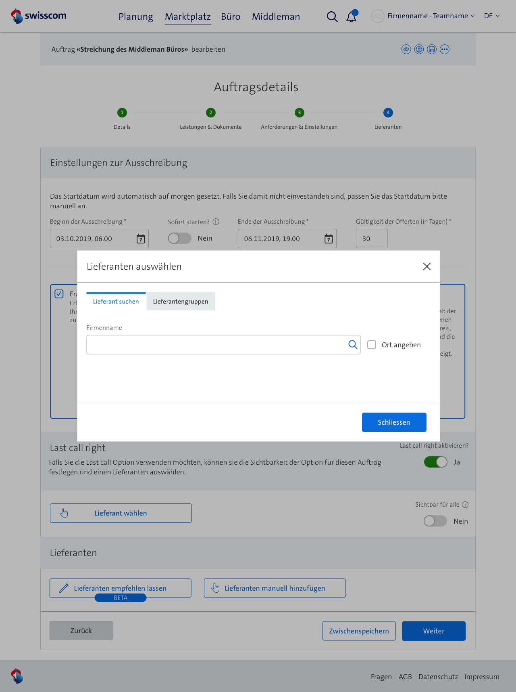
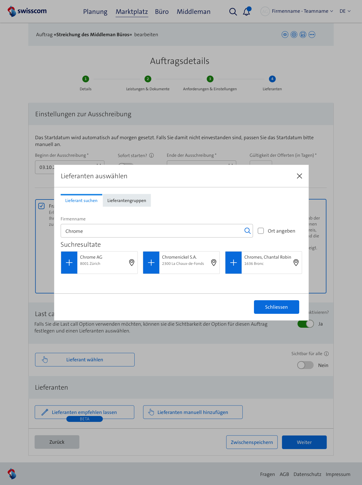
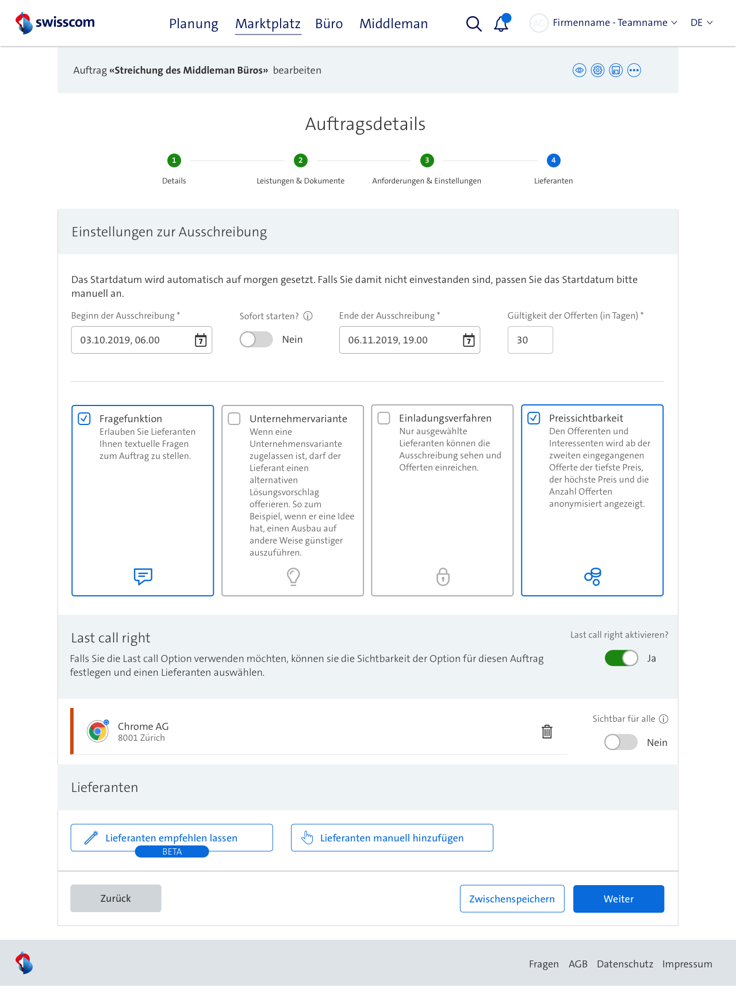
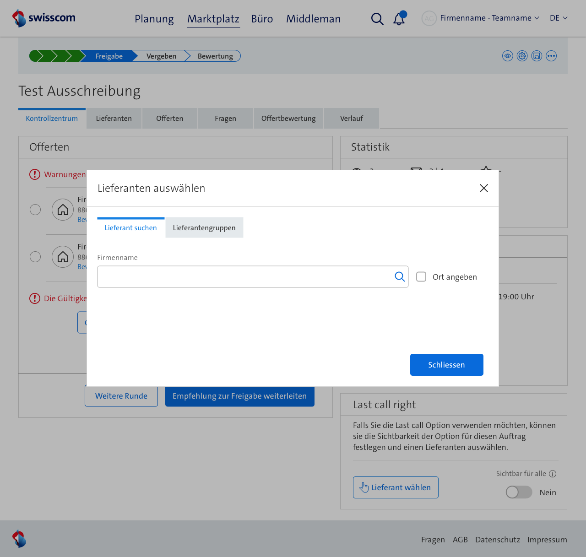
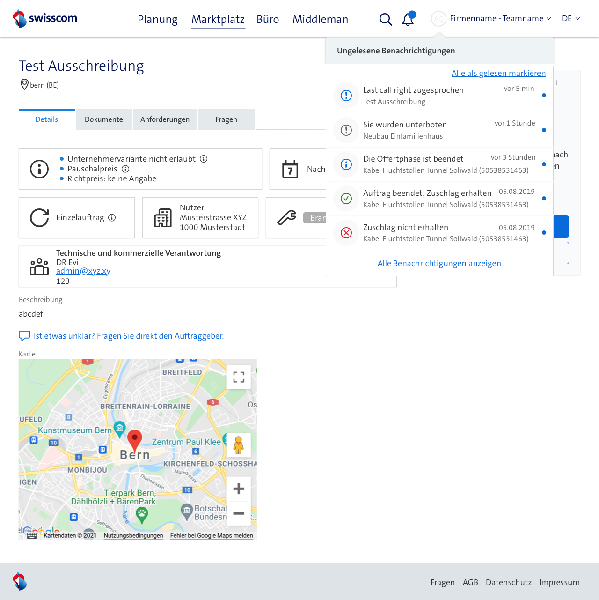
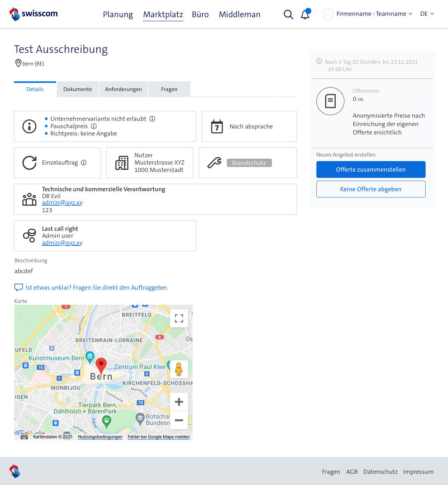

Hier kannst du das Design für die Last Call Funktion sehen, welches ich für Middleman erstellt habe. Hier geht es darum einen Nutzer auszuwählen, welcher nach Ablauf des Auftrages entscheiden kann, ob dieser nicht doch noch eine Offerte zusammenstellen möchte.








